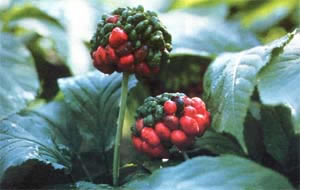
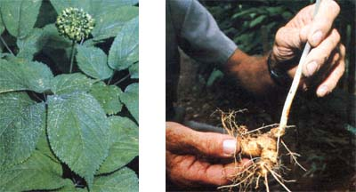
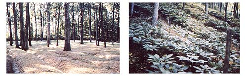
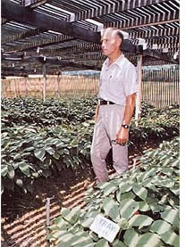

While it's not exactly a get-rich-quick scheme like those touted on matchbook covers, growing ginseng promises financial rewards that do sound almost too good to be true. But the fact is that, if you live where the climate is right, in five years (and with little capital investment) you can grow as much as $30,000 worth of the prized botanical on only half an acre of woodland!
But where, you may ask, do you have to reside in order to be a prime candidate for growing this green gold? Well, the hardwood forests of the eastern United States and Canada are ginseng's natural habitat, but it can be cultivated almost anywhere north of central Alabama . . . if the area receives between 20 and 40 inches of rainfall annually. No sophisticated techniques are needed to raise the precious crop, either . . . only a goodly portion of patience and a willingness to get your hands dirty. I grow ginseng quite successfully, though I've had only a few years' previous experience in vegetable gardening.
Wild 'sang, as old-timers call the plant, flourishes best beneath a stand of mature hardwoods on a gentle northeast-facing slope that has thick, moist leaf litter and little undergrowth. Such a place is naturally ideal for cultivating ginseng, but the botanical should thrive in almost any well-tended, well drained but moist-location that doesn't receive too much direct afternoon sunlight. (Some growers even construct their own lattices-6 to 7 feet above the plants-to provide the necessary 75 to 80% shading.)
When prospecting for a suitable spot, I look for a few wildlings that are similar to ginseng, such as trilliums, jack-in-the-pulpits (Arisae ma triphyllum), May apples (Podophyllum peltatum), rattlesnake ferns (Botrychium vir ginianum), or wild ginger (Asarum canadense). The type of soil isn't critical to growing success, although a sandy loam with a pH level of 5.0 to 6.0 is preferable. During dry weather, however, you should check to see whether or not the soil under the leaves remains moist, without being overly damp . . . and water, if needed.
Once you've located-or created-a promising area for cultivating your crop, you can go ahead and prepare the bed for it by first removing all undergrowth. (If there is a thick over story surrounding the plot, thin that somewhat to allow air to circulate over the bed.) Next, stake out an area 4-1/2 to 6 feet wide and as long as you like for the growing area, adding 1 foot along each side for an access trench/walkway. Keep in mind that running the bed down a gentle slope will encourage the shedding of surface water.
When you're satisfied with the situation of your plot, break up the soil 6 to 8 inches deep, removing as many tree roots as possible. To facilitate drainage, mound the dirt taken from the bordering trenches along the centerline of the bed, but don't otherwise raise its level. And, if your "ginseng garden" lies on a slope, join the border trenches at its top to form an inverted "V" (to divert rain runoff).
Now, it's time to make another decision: How will you obtain the plants for the new bed? It's possible to get started in the ginseng business by digging up and transplanting wild roots, and then collecting, stratifying (preserving the seeds by arranging them between layers of a moisture-retaining material), and later planting the wildlings. Unfortunately, though, there's not much wild 'sang left . . . so you'd have to spend a great deal of time searching it out to collect it.
A more practical approach is to buy an initial batch of seedling roots or seeds from a successful grower (see the sidebar, "Estimating Costs and Profits", for a discussion of these two methods of stocking). Many regional farming publications carry classified ads for ginseng, and national magazines such as THE Mother Earth News, Progressive Farmer, and Fur-Fish-Game have several of these notices in each issue.
Before sending off your order, you'll have to decide whether you want to stick a tentative toe into ginseng farming or to take the full plunge. If you've had no experience, it may be a good idea to order a few dozen seedlings or the smallest quantity of seeds available (or a combination of both) for your first venture into the business. Plant the 'sang in your prepared bed, see how it performs throughout one summer, evaluate your prospects . . . and then proceed from there.
Even if you're already familiar with the botanical's cultivation and are eager to establish your homegrown income, it's probably wise to start at less than full production. I'd advise you to aim initially at growing enough plants to produce all your own seeds. Specifically, I'd recommend that, for the first year, you plant a fortieth of an acre-about 750 square feet of actual bedding space-as a permanent, seed-producing plot. (This is about the smallest area that's worth a businesslike effort to prepare and monitor conscientiously.) For this, you'll need to order either 2,000 seedling roots or 4,000 seeds.
Then, during your second season, plant another 750 square feet to give yourself a total of 1,500 square feet of seed-producing beds (all you're ever likely to need), which should yield about 15 pounds of seed yearly. You'll find that this amount-roughly 120,000 seeds - is enough to sow 7,500 square feet of beds on a quarter of an acre.
By starting with permanent seedbeds like those I've described, you can begin on a small scale, with a minimal capital outlay. Then, by the time you start harvesting your own seeds in quantity, you'll have several years of growing experience under your belt.
As soon as you receive an order of seeds or rootlets, inspect them. If any are mushy or soft, return them for replacements. The stock should be planted promptly, but you can store the seeds or seedling roots temporarily in your refrigerator . . . or in another place where the temperature remains between 36° and 50°F. Do not freeze the stock, though. To store it safely, open the bags, add just a few drops of water, stir or shake the contents gently, and reseal the containers. Repeat this process every few days, since seeds are especially subject to mold or dehydration. Then-just before planting them soak the seeds or seedlings for 10 minutes in a solution of 1 part chlorine bleach to 9 parts water to reduce the possibility of fungal contamination.
Stock should be set out in either the fall or the early spring. Plant seeds about I/2 inch deep and seedlings 1 to 2 inches deep. The spacing between the stock will significantly affect both root growth and seed production when the plants become older and larger. As a rule of thumb, rows should be set 6 inches apart . . . and it's best to run them across not down-the length of the bed. However, you have two options (depending on how you want to handle your future crop) regarding the spacing of plants within the rows.
If you intend to dig up your roots and sell them at the end of only four or five years, either set the seedlings 3 inches apart within the rows, or plant seeds 1-1/2 inches apart . . . thinning and transplanting as needed to achieve 3-inch spacing at the end of two years.
On the other hand, if you want to grow the glossy perennials for a longer period, harvesting several additional batches of seeds before you dig the roots, then either set the seedling roots 9 inches apart or place seeds 41I2 inches apart . . . thinning them to a 9inch spacing after two years.
When I plant, I start at the top of a bed, dig a shallow trench to the desired depth across the width of the bed, and set out my seedling roots or seeds. Then I dig another trench 6 inches down from-and parallel to the first one, moving the dirt from the second trench over to cover the first. I repeat this procedure all the way down the bed, using a 6-inch-wide board as a movable guide. A seedling can be set in at any angle-or even flat-as long as the bud neither faces down nor is exposed on the surface. Be sure not to crimp the root.
Once you get to the point at which you're planting tens of thousands of seeds, the process outlined above will become too time consuming and back straining to be practical. Instead, after the soil is broken up, the seeds can be cast by hand as closely as possible to the desired spacing (sowing about 16 kernels per square foot) and covered with a thin layer of dirt as the bordering trench/walkways are being dug. Finally, you should take extra care to mulch the area thoroughly and evenly.
Decaying leaf litter is, of course, the natural organic fertilizer of wild ginseng. Heavy doses of soil supplements-either barnyard or chemical-though, seem to force growth, thereby increasing ginseng's susceptibility to disease. So, unless you're certain that your soil requires a nutrient boost, such additives should be avoided, or at least used sparingly.
Mulch, on the other hand, is essential to helping the woodland crop retain moisture during hot, dry weather. With adequate shade and good mulching, your plants shouldn't require watering (assuming, of course, that you're raising them in an area with the appropriate amount of annual rainfall). This blanketing will also aid in weed control and reduction of erosion. In western North Carolina, where I live, about 2 inches of leaf litter or 1 inch of sawdust can be kept on the beds year round. Farther north, up to 4 inches of mulch is needed over the winter, both to minimize frost heaves and to keep the roots from undergoing repeated-and potentially fatal freezing/thawing cycles. Such a thick layer must be partially removed in the spring to allow the young plants to emerge.
Leaf litter is an excellent mulch, but-in my experience-a bark/sawdust mixture from oak or poplar will promote healthy growth better than any other medium. Then too, many growers use hay or straw (probably because those materials are readily available). Whatever you cover your own plants with, check the beds regularly during the cold months to make sure the wind hasn't created bare spots . . . particularly if you haven't laid down a protective layer of mulch-holding brush.
Maintaining a ginseng patch requires less ongoing care than does a vegetable garden of comparable size . . . but, of course, it does place some demands on the grower. First-year plants are especially vulnerable to stress, so they'll need to be watched closely and weeded scrupulously. Mature, well-established specimens that were planted thinly require little attention beyond a weekly inspection. If a problem does occur, the worst that usually happens is that a few tops are killed, so that the afflicted plants' root growth and seed production stop for the summer. Never fear: Next spring, new tops will appear.
If, however, your crop is thickly sown, you'd be wise to check even mature plants every other day, quickly removing the tops of diseased stock before trouble can spread. Of the several maladies that sometimes attack ginseng, the most dire is Alternaria (stem and leaf) blight. Many large commercial growers carry out a weekly preventive spraying program against it, beginning as soon as the leaves unfurl in spring . . . using a manebtype fungicide.
To avoid blights without having to employ a fungicide, you must plant sparsely, making sure that there's good air circulation over your beds, and-after the tops die down in autumn - removing all the litter and mulch. (If normal leaf fall is insufficient to re-cover the patch, you'll have to mulch again with material from another area.)
Should a disease problem arise that's not familiar to you, consult your county agricultural extension agent immediately.
I've never had my own crop threatened by a severe infestation of insects or rodents, but I know of at least one grower who's had a serious problem with an unidentified species of burrowing animal . . . so be forewarned that you could have "critter trouble". In addition, slugs and snails may eat the leaves during damp weather if they aren't controlled.
Actually, all manner of furry creatures will roam through your ginseng beds . . . without doing much damage. One summer, a zoology student asked to live trap my patch, and he caught moles, voles, shrews, gray and red squirrels, flying squirrels, chipmunks, rabbits, and a lone possum. None of these trespassers seems to rate the pungent root very high on its list of preferred foods, although I suspect that animals consider the berries to be a bit of a forest delicacy. (Hence, I always pick the seed filled fruit as soon as it ripens.)
To defend against possible animal intrusions, some commercial growers fence off their growing beds. One fellow I know keeps stable of slightly underfed cats. Personally, I've enjoyed the unsolicited assistance of screech owls and a family of Cooper's hawks that nest near my beds. But, as I said, four legged raiders aren't likely to pose much of a problem.
To tell the truth, the human pests are probably the worst predators. Poaching ginseng is a punishable felony in a few states, but that doesn't keep some light-fingered types from being irresistibly tempted by a large patch of mature ginseng. After all, once roots are dug up, they can't be traced and can easily be sold for full value. Consequently, some growers keep large, loud dogs to ward off two legged thieves . . . but most people are just careful to keep their own counsel about the fact that they're cultivating a crop of green gold.
Seeds are picked in the fall as the berries ripen on third-year and older plants. A healthy fifth-year plant produces at least 15 berries, each containing two seeds. You should store your harvested red nuggets in a cool, moist place out of the sun, where they're protected from rodents. I put mine in tubs in a shed, alternating one-inch layers of fine sand with half-inch layers of berries, and place a damp towel on top of the whole shebang. In six weeks or less, the berries decay, exposing their seeds. Until then, the berry pulp keeps the seeds moist, but when the pulp has completely deteriorated, the seeds begin to dry out and lose their viability.
To keep my rounds usable, I spread the six week-old sand-and-seed mixture on a window screen, and hose the sand away through the mesh. Afterwards, I can either plant the 'sang starters immediately or stratify them.
In the beginning, you'll probably elect to plant all of your seeds right away and wait the 18 months (!) it takes for them to germinate. But when you start producing more seeds than you have time (or space) to grow, you'll almost certainly have to stratify them in order to sell them: Folks simply don't want to buy any seeds that'll take over a year to sprout!
To "age" the seeds so that they will germinate in the spring following a fall planting, I mix them with sand or fine dirt, and place this blend in a box that's screened on the top and bottom to admit rain and allow drainage. Then I bury the box in the woods-just below the surface of the soil-and cover it over with an inch or two of earth and two inches of mulch. The next fall (or as early as August), I dig up the one-year-old stratified seeds to plant or sell.
Various conditions determine growth rates, but it's rarely economical to harvest roots before their fourth year. (After the fourth year, root weight generally increases about 20°76 yearly.) When you do dig up your crop, wield your shovel carefully, so as not to mutilate the roots . . . or you'll lessen their value.
When you've dug up your treasure, wash off the dirt. But don't scrub the gnarled roots too thoroughly, as the soil in the ridges highlights the wrinkled quality of the tubers. If you dig them in the late fall, after growth has ceased and the leaflets have turned yellow, you can immediately replant any undersized roots without risk of damaging them.
Dry your ginseng in a well-ventilated room at a temperature of at least 60°F, not exceeding 90°F for any prolonged period. Spread the roots only one layer thick on a screen or lattice-to promote air circulation and turn them once a day. Small roots take just a day to dry, but large ones may take as long as six weeks. Keep an eagle eye on your crop, as mold may strike during damp weather. If that happens, rush the ginseng into direct sunlight for a few hours.
You'll know your harvest is properly dry when the roots break with a snap when bent. The yield should then be stored in a dry, well ventilated, rodent proof container until you're ready to market it.
In most communities near where wild 'sang grows, there's at least one shrewd old-timer who buys both wild and cultivated roots. My experience has been that local dealers offer prices that are the same as, or very close to, the prevailing rate throughout the country. However, they may not pay a premium for particularly fine specimens. Should you have a large quantity of quality roots-or if you don't live within ginseng's native territory you can sell your dried roots by mail to any of several export companies. Before shipping your entire crop, reach an agreement on a price, using a sample as the basis.
Like any other commodity, the value of ginseng fluctuates according to supply and demand . . . but there's also considerable price variation relative to the quality of the roots. (Experienced buyers evaluate the age, size, shape, wrinkles, texture, interior and exterior color, evidence of damage or disease, and other factors before setting their prices.) So you'd be wise to obtain at least two quotes before making a large sale.
In the past few years, the price of cultivated, woods-grown ginseng has ranged between $40 and $65 per pound, and the more highly prized wild roots have sold for around $140 a pound! Most American ginseng is sold through the trading port of Hong Kong, intended for ultimate sale to people of Chinese extraction . . . who use the root for medicinal purposes. Indeed, while this article has focused on the cultivating of the woodland perennial, let me assure you that volumes have been written about the tangy root's health applications and significance in Oriental cultures. Trading wars have erupted and international pacts have been signed because of the rare botanical!
As the market now stands, the future for ginseng cultivators appears to be rosy. In 1981, the U.S. exported $40 million worth of ginseng . . . and, with the opening of diplomatic relations with the People's Republic of China, the demand is expected to increase steadily. So it looks as if today is the time to take a speculative walk around your property. Who knows, maybe within five years you can have a booming and lucrative ginseng export business . . . operating from a few half-acre chunks of otherwise marginal wood land!
American ginseng, Panax quinquefolium, is a rather ordinary-looking little plant about 20 inches high-which grows inconspicuously on the forest floor. It is a deciduous perennial that produces a new top each year and has a slow growing tuberous rootstock.
Ginseng seeds sprout in April or early May, approximately 18 months after they drop from the plant-within bright red berries-during early autumn. Throughout its first summer of growth, the plant develops a small, skinny root and atop that consists of three leaflets. It stands only a few inches high and greatly resembles the wild strawberry. After the first fall frost, the top turns a rich ocher yellow and soon dies . . . but below ground level, the root survives the winter, freezing as the ground freezes.
The second-year plant is either a single palmate cluster of five leaflets, or two prongs with three to five leaflets radiating from each prong. In succeeding years, the top has two, three, and-in time four prongs, with three to five leaflets on each fork. From the center of this whorl of prongs and leaflets, a small cluster of yellow green blossoms arises in May or dune, followed by a clump of kidney shaped crimson berries in early autumn. At the three-pronged stage, a plant will produce 15 to 40 berries annually, each of which usually contains two hard, flat seeds.
The root may triple in size during each of the first few growing seasons, but the growth rate soon tapers off until only about a 20% increase in root weight is achieved during each succeeding year after the fourth season. The raw root looks something like a small, off white, distorted carrot that has had a long and bitter life . . . and it tastes pretty nearly as unappetizing, as it looks. (A root occasionally branches in such a way that it imitates the form of a man. Such a specimen is said to be worth many thousands of dollars in China. In fact, the name "ginseng" is derived from the Chinese term for "man shaped" .)
When the top dies off each fall, it leaves a scar on the neck of the root. The next year's bud forms on the opposite side of the neck, and this habit leaves the root neck bearing a series of alternating, ascending scars, which tell the age of the ginseng. Twenty-year-old plants are common in the wild, and `geriatrics" more than 90 years old have been documented.
Raising ginseng is occasionally advertised as a get-nick-quick scheme. Be assured that this is not the case! Rather, cultivating the plant is an undertaking that a prudent, patient person who likes to grow things can find interesting and profitable.
COST
(As of printing - July 1983)
Starting up a ginseng business entails a modest or moderate initial capital investment, few operating expenses, and a goodly amount of time and labor (which in themselves have considerable value). Each person will choose to do things differently, and thus expenses will vary. Yet you should be able to project your costs fairly accurately . . . if you consider the factors I'm about to mention.
Assuming that you plan to (eventually) plant seeds you grow yourself, your biggest capital outlay will be for an initial order of seedling roots and/or stratified seeds. Naturally, the greater the quantity you buy, the less you'll have to pay for each seedling or seed.
One-year-old seedling roots are generally priced from 10c to 17e apiece, two-year-old roots range from 210 to 300 each, and three year-old specimens cost 300 to 450 per item. To qualify for the lower ends of these price ranges, you'll have to buy at least 1,000 roots. The price of stratified seed varies from just over 1 to a bit over 2Q per seed. Ads generally offer seeds for $4 per ounce, $18 per thousand, and $110 for a pound (about 8, 000 seeds).
The advantages of using the more expensive seedling roots include their higher probability of sprouting and surviving . . . and the savings of one to three years of time and labor. (Within three years, the value of the seeds you've harvested should at least equal the initial cost of the seedlings.) The primary advantage of stocking with seeds is their lower unit price.
As I stated in the body of this article, I think it's a good idea to plant 750 square feet of permanent seedbeds for two years running. This will require about a hall pound of seed or 2,000 seedling roots each year . . .
at an annual cost of approximately $60 (for seed) or $600 (for 2,000 third year seedling roots). In succeeding years, you'll be planting your own seed.
Besides stocking your ginseng nursery, you may need to buy mulch, pest-control aids, and-perhaps little fertilizer. My total cost for such items last year was about $40. If you've decided to fence your plots, calculate that expense, as well.
You'll also need a few tools, such as a shovel . . . an axe for clearing saplings and cutting tree roots . . . a sturdy garden rake . . . and a tiller (unless you favor really hard work). You can rent or borrow the tiller, since you'll need it only when you prepare the beds for planting.
As far as labor goes, during the growing season you should be able to manage as much as an acre of ginseng on a part-time, after work, every other-day basis. (There's little to do for the plants in the winter.) The work required won't break your back, but it will bend it.
PRODUCTION
Your yield will depend, of course, on your cultivation methods, the soil's condition, and your horticultural expertise. From my own experience and that of other growers 1 know, 1 d say that one tenth of an acre (about 3,000 square feet of actual bed space) of cultivated ginseng raised in forest shade should yield a dried root weight of about 120 pounds at the end of five years. Now this is a fairly conservative figure . . . nevertheless, only growers with some experience behind them are likely to do this well. Yet a person who achieves considerably less success will still net a tidy sum!
PROFIT
So what's the bottom line? Simply this: The 120 pounds of dried roots you should be able to raise on one-tenth of an acre-at an average price of $50 per pound-would have a gross value of $6,000 . . . to say nothing of the seeds you'd harvest to use or sell along the way. On half an acre, then, you could expect to gross $30, 000.
Now do you see why ginseng is called green gold?
|
 PHOTOS BY MOTHER'S STAFF AND SUPPLIED BY THE AUTHOR Sang berries are red when mature . . . however, they then take 18 months to sprout. It will be five years after the seedlings emerge before the roots are big enough to sell. |
 PHOTOS BY MOTHER'S STAFF AND SUPPLIED BY THE AUTHOR Above, right: Although ginseng roots may not look all that appetizing to the average Westerner's eye, they're highly prized for many medical uses in the Orient . . . and fetch an average price of $50 a pound. (Older, more ""wrinkled""; specimens go for much more.) Above, left: The plant itself is an attractive woodland perennial that's found wild in some parts of the U.S. |
 PHOTOS BY MOTHER'S STAFF AND SUPPLIED BY THE AUTHOR Above, left: The most important-and laborious task in ginseng raising is preparing the plant's growing area. Here, the author has laid out and mulched a series of 4-1/2- to 6 foot-wide elevated beds. Trees will shade the crop. Above, right: A luxurious mat of growing sang. Having the beds run ,down a gentle slope will help them shed surface water. |
|
 PHOTOS BY MOTHER'S STAFF AND SUPPLIED BY THE AUTHOR Ginseng can be grown in fields! Dr. Tom Konsler of the Mountain Horticultural Crops Research Station in Henderson County, N. C. uses a wood lath shed to give his plants the necessary 75% shade. |
|
|